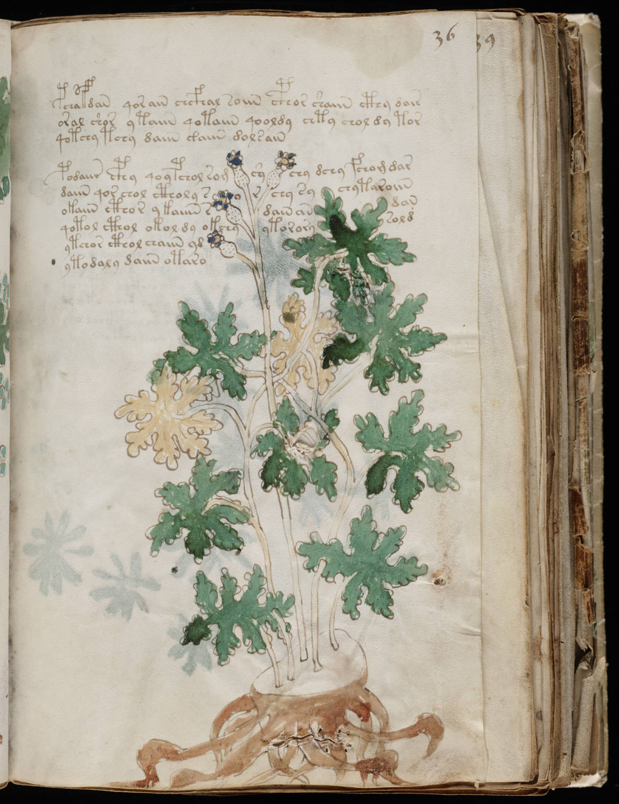

f36r
1pchafdan qorain chcfhal soiin cphor shaiin cthy dair2oral shor ytaiin qotaiin qooldy chty chol dy tor3qotchy tchy daiin gaiin dolsain4podaiir cphy qoypchol romcychy dchy fchom dar5daiin qor chol ctholy sorchy sychytaroiin6okaiin cthor ykaiiin sdain andan7qotol cthol okol dy okchyytororysold8ytchor cthol chaiin yd9ytodaly daiin otaro
